IGZO TFT 설계 및 시뮬레이션, 그리고 공정과 측정
1 um급 IGZO TFT의 W/L 및 Gate Misalignment 변화에 따른 공정 허용오차와 전기적 특성 분석
개요
본 프로젝트는 IGZO(In-Ga-Zn-O) 산화물 반도체 박막 트랜지스터를 대상으로, 레이아웃 설계부터 공정 레시피 설계, 소자 시뮬레이션, 그리고 학교 공정 실습과 측정까지 전 과정을 학부생이 직접 수행하는 것을 목표로 합니다. 25 x 25 mm 마스크 한 장에 채널 폭·길이를 바꾼 TFT, W/L 비율(beta) 기반 인버터, 게이트를 의도적으로 이동시킨 오정렬 TFT, 그리고 최소 채널 길이 1 um급 공격적 소자를 함께 배치하여 설계 파라미터와 공정 오차가 소자 특성에 미치는 영향을 한 번의 공정으로 비교할 수 있도록 구성했습니다.
팀원 각자가 담당 블록을 개별 GDSII 파일로 작업하고, KLayout 매크로가 이를 셀 라이브러리로 자동 등록하면 통합 담당자가 마스터 파일에서 블록을 배치·정렬해 최종 산출물을 관리합니다. 소통은 Discord 포럼, 파일 동기화는 Git/GitHub, 공정 설계 근거는 Notion에 기록하여 15명 규모의 협업에서 발생하는 소통 오버헤드를 시스템으로 해결했습니다.
공정 설계는 배운 내용에 그치지 않고 팀원이 각자 논문을 맡아 정리한 뒤, 학교 공정 레시피와 비교하여 두께·소재·공정 조건의 선택 근거를 문서로 남겼습니다. 시뮬레이션은 Silvaco TCAD로 시작해 Python DEVSIM으로 옮겨, 정량 예측보다는 W/L·beta·게이트 오프셋 변화에 따른 추세를 미리 확인하고 실측값 검토의 기준으로 삼았습니다.
배치 및 요약
전체 레이아웃 · 디자인룰 · 배치 요약도
전체 레이어를 격자로 나누어 셀을 삽입하고, Task별로 사등분하여 같은 종류의 소자를 한곳에 몰아 배치했습니다. 얼라인 마크는 중앙을 기준으로 십자 형태로 총 25개를 배치했으며, 마스크 외곽 2.5 mm에는 주석을 제외한 기능적인 부품을 배치하지 않았습니다. 기존 Single AMP 셀은 인버터로 대체했습니다.
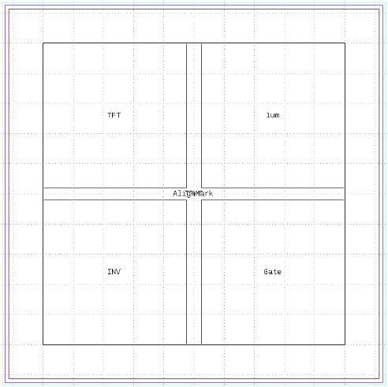
| Cell Name | H (um) | W (um) | Row | Column | Total |
|---|---|---|---|---|---|
| MASK | 25000 | 25000 | 1 | 1 | 1 |
| PATTERN AREA | 20000 | 20000 | 1 | 1 | 1 |
| TFT | 600 | 1187.5 | 16 | 8 | 128 |
| INVERTER | 873 | 792 | 9 | 10 | 90 |
| GATE MIS-TFT | 950 | 600 | 16 | 10 | 160 |
| 1um-TFT | 417 | 679 | 12 | 14 | 168 |
| 1um-INV | 766 | 679 | 6 | 14 | 84 |
| ALIGNMARK | 800 | 1000 | 13 | 13 | 25 |
블록별 배치도
각 셀에 어떤 소자가 들어가는지(W/L, beta, 게이트 오정렬량)를 엑셀 형식의 표로 정리해 레이아웃 작업과 측정 시 셀을 찾는 기준표로 사용합니다.
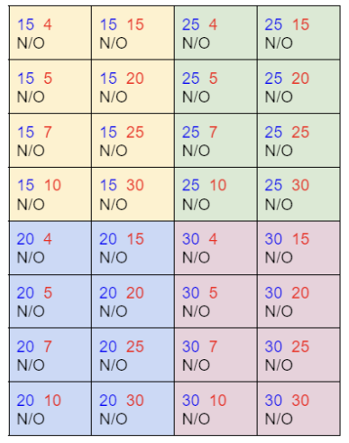
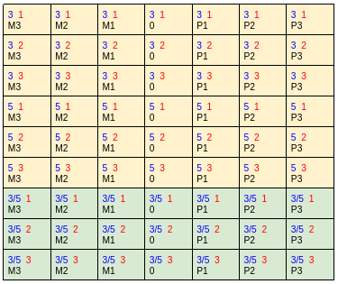
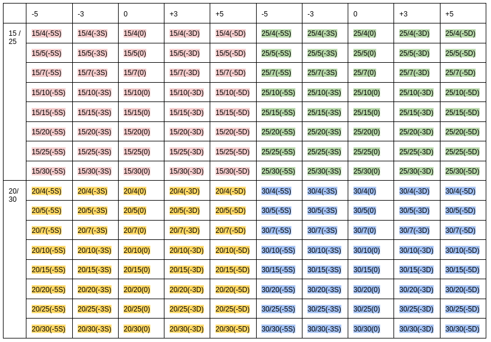
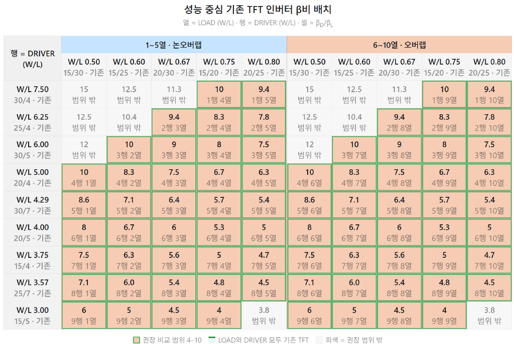
레이아웃 설계
TFT · 1 um · Inverter · Gate Misalignment · Align Mark
TFT
채널 폭 W는 15, 20, 25, 30 um, 채널 길이 L은 4, 5, 7, 10, 15, 20, 25, 30 um로 구성하고 Overlap / Non-overlap 두 구조를 모두 설계하여 총 64종류의 조합을 확보했습니다. 공통 디자인룰은 최대 상대 오버레이 오차 3 um, S/D-IGZO 접촉 Overlap 10 um, Via 5 x 5 um, Pad 300 x 300 um입니다.
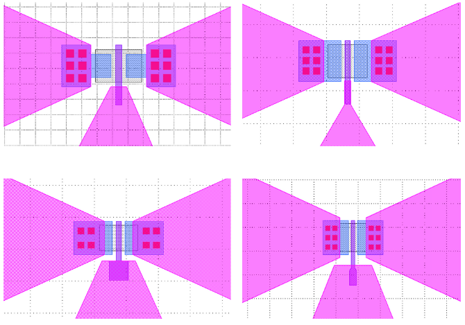
Inverter (beta 기반)
기존 인버터는 TFT 특성만 얻을 수 있다는 한계가 있어, Driver와 Load의 W/L 비율(beta)을 기준으로 재설계했습니다. 이를 통해 인버터를 보다 다양한 범위에서 비교할 수 있을 것으로 기대합니다.
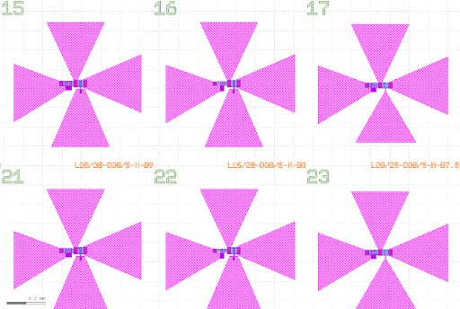
1 um TFT
기존 TFT보다 채널 폭과 길이를 축소하여 최소 채널 길이를 1 um까지 구현한 공격적 설계입니다. 채널 폭 W는 3, 5 um, 채널 길이 L은 1, 2, 3 um로 총 6가지 W/L 조합을 설계했고, 설계 정렬 여유는 1 um, S/D-IGZO 접촉 Overlap은 3 um로 설정했습니다.
- 설계 목적 — L을 1 um까지 축소하여 공정상 형성 가능한 최소 채널 길이를 확인하고, 기존 TFT보다 작은 W/L 변화에 따른 드레인 전류와 소자 특성 변화를 비교합니다.
- 고려사항 — 1 um 채널은 정렬 오차와 패턴 선폭 오차의 상대적 영향이 크기 때문에 실제 채널 길이가 설계값과 달라질 수 있습니다. 따라서 일부러 오정렬된 구조를 함께 설계하여 공정 성공률을 높였습니다.
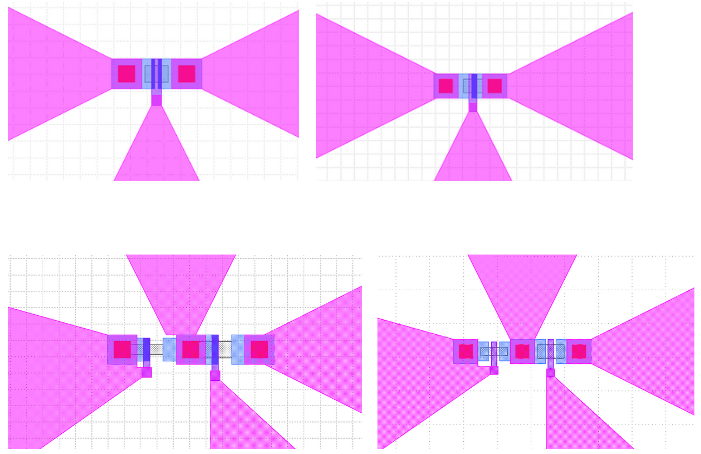
Gate Misalignment
기존 Non-overlap TFT의 W/L 조합에서 게이트를 S/D 쪽으로 3 um, 5 um 이동시킨 구조를 추가하여, 게이트 위치에 따라 총 5개의 소자(가운데, Source 쪽 3/5 um, Drain 쪽 3/5 um)를 비교할 수 있습니다. 이 게이트 오정렬 결과를 학술지 및 학회 포스터로 확장할 예정입니다.
- Offset 구조의 장점 — CGS, CGD가 감소합니다. 특히 gate/drain-offset 구조에서는 게이트와 드레인 사이 거리가 멀어지며 드레인 근처에 집중되던 강한 전계가 분산되어 파괴 전압(Breakdown Voltage)이 높아지고 고전압 동작이 가능해집니다.
- Offset 구조의 단점 — offset 영역은 전자가 이동하기 어려운 높은 저항 공간으로 작용하여, offset 길이가 길어질수록 On-current와 gm이 줄어듭니다.
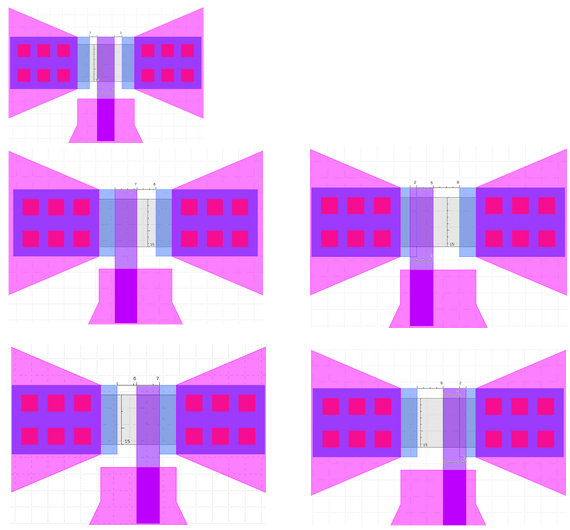
Align Mark
1000 x 800 um 크기의 얼라인 마크와 공정 확인용 마크를 격자 형태로 반복 배치하여, 특정 마크가 공정 중 손상되더라도 인접 마크를 대체 정렬 기준으로 사용할 수 있게 했습니다. 공정 확인용 마크는 대각선 방향으로 한 줄 배치하여 각 공정 후 패턴 전사 상태와 레이어 형성 여부를 빠르게 확인합니다.
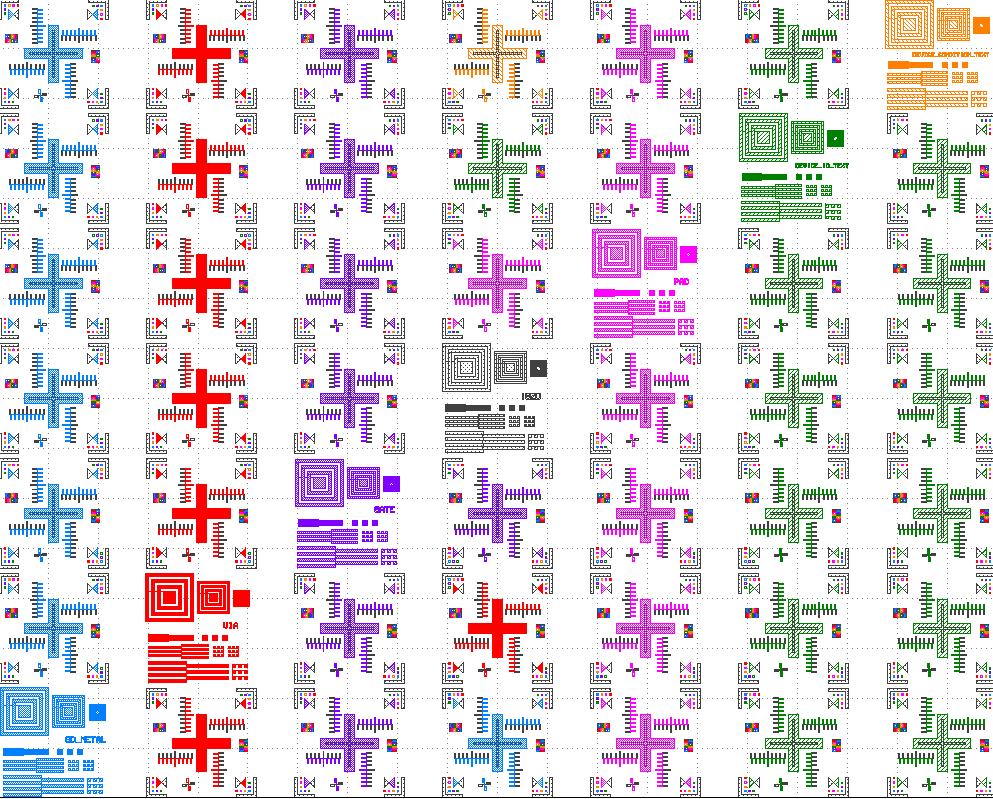
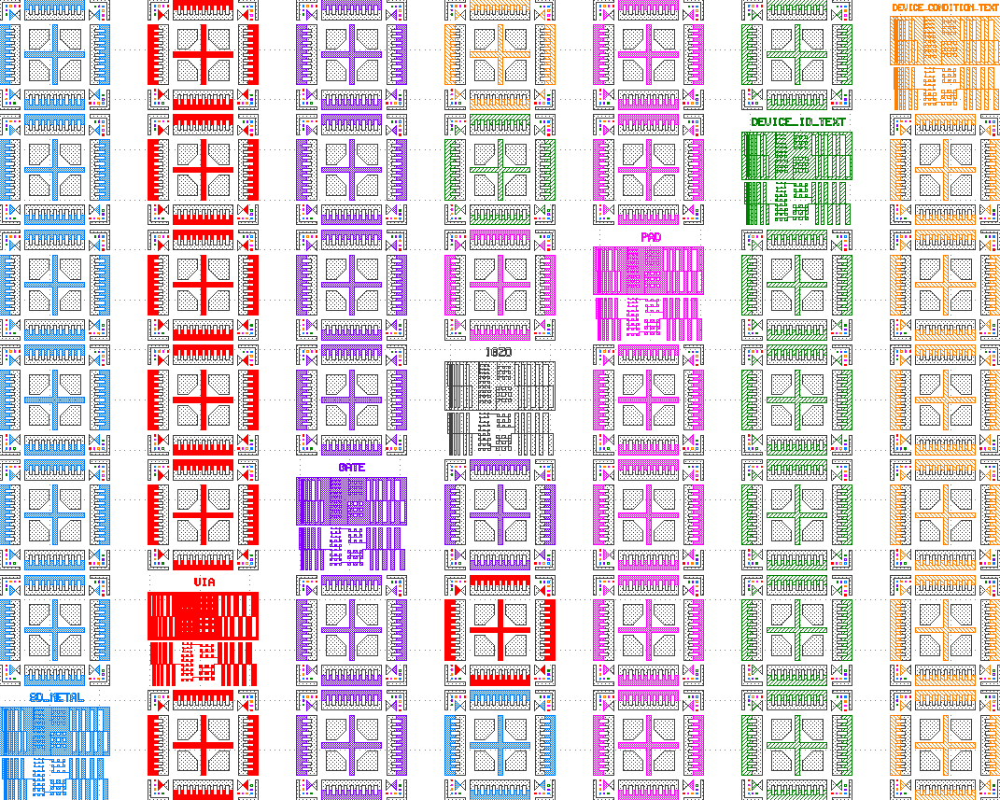
| 마크 | 역할 |
|---|---|
| Global Mark L-shape / 바람개비 |
마스크의 중심 위치와 X/Y 방향, 수평·수직 회전 오차를 확인하는 전역 정렬 마크 |
| Overlay Check Mark Vernier / Triangle |
정렬 후 각 레이어가 실제로 얼마나 정확히 겹쳤는지 확인하는 검사용 마크. 글로벌 정렬 후 세부 정렬에 사용 |
| Lithography Resolution Test Pattern |
포토리소그래피 후 미세 패턴이 설계대로 형성되었는지 확인하는 단일 레이어 평가 패턴. 정사각형 · 긴 막대 · 미로 형태로 1~5 um 선폭까지 평가 가능 |
공정 설계
공정 두께 · 소재 선택 · 공정 선택과 레시피
단순히 배운 내용만 적용하기보다, 팀원이 각자 논문을 맡아 정리하고 그 내용을 Notion에 기록해 설계 인원 전체가 공유했습니다. 학교 공정 레시피와 비교하여 각 값의 선택과 그 이유에 대한 근거를 확립했습니다. IGZO 활성층의 전자 농도에 따라 스퍼터링 조건을 설정했고, ITO 스퍼터링 조건은 논문을 통해 결정했습니다.
레이어 설계
| 레이어 | 소재 | 두께 | 공정 | 소요 시간 |
|---|---|---|---|---|
| IGZO | IGZO | 30 nm | Positive PR → RF Sputtering → Lift-off → Annealing | 약 4~6 h |
| SD-METAL | ITO | 40 nm | Positive PR → RF Sputtering → Lift-off | 약 2~4 h |
| INSULATOR | Al2O3 | 60 nm | Thermal ALD | 약 8~9 h |
| VIA | — | — | Wet Etching | 약 1~2 h |
| GATE | ITO | 40 nm | Positive PR → RF Sputtering → Lift-off | 약 2~4 h |
| PAD | ITO | 80 nm | Positive PR → RF Sputtering → Lift-off | 약 3~5 h |
| TOTAL | — | — | — | 약 20~30 h |
주요 공정 조건
| RF Sputtering | IGZO (n ≈ 1015 cm-3) | SD-METAL, GATE, PAD |
|---|---|---|
| Composition | In2O3 : Ga2O3 : ZnO = 44.22 : 29.86 : 25.92 wt% | In2O3 : SnO2 = 90 : 10 wt% |
| Base pressure | ≤ 5.0 μtorr | |
| Working pressure | 4.0 mtorr | |
| Power | 60 W | |
| Gas flow | Ar / O2 = 50 / 1.5 sccm | Ar = 50 sccm |
| Substrate temperature | 상온 | |
| Substrate bias | Off | |
| 공정 | 대상 레이어 | 조건 |
|---|---|---|
| Annealing | IGZO | 200 °C · 1 h · Air ambient |
| Thermal ALD | Insulator | 250 °C · 증착률 10 nm/h · Precursor/Oxidant: TMA / H2O |
| Wet Etching | Via | Etchant: H3PO4 (primary) / BOE (alternative) |
| Lift-off | IGZO, SD-METAL, GATE, PAD | PR: LOR(Via 제외) + Positive PR · Remover: NMP (primary) / DMSO (alternative) · 50~60 °C |
| Cleaning | 공통 | IPA → DI water → N2 Dry |
직접 참고한 문헌
| 문헌 | 내용 | 참고한 부분 |
|---|---|---|
| Drain Current Stress-Induced Instability in a-InGaZnO TFTs Materials, 2018 |
IGZO 25/45/75/100 nm 두께에 따른 전기적 특성 및 안정성 비교 | IGZO 30 nm 선정 근거. 너무 얇으면 bias-stress 불안정성 증가, 너무 두꺼우면 oxygen vacancy·bulk defect 및 SS 증가 경향을 고려 |
| Comparative Study of a-IGZO TFTs Deposited by RF and DC Sputtering IEEE EDSSC, 2012 |
RF와 DC 스퍼터링 TFT 비교. RF에서 낮은 off-current, 높은 on-current 및 우수한 SS 확인 | IGZO 증착 방식을 RF 스퍼터링으로 선정한 근거 |
| 단채널 a-IGZO TFT의 나노초 레이저 어닐링 연구 가천대학교 학위논문, 2022 |
IGZO 약 28~30 nm, RF 60 W, Ar 50 sccm, 4 mTorr, RT 조건 및 ITO/IGZO Lift-off 공정 적용 | IGZO 30 nm / 60 W / 4 mTorr / Ar 50 sccm / RT 및 Lift-off 공정 설정에 가장 직접적으로 참고 |
| Ag Nanowire Lift-off 방식 Etchless Recess 나노스케일 IGZO TFT 공정 개발 한양대학교 학위논문, 2025 |
S/D에 ITO 45 nm, RF 스퍼터링 적용 | ITO 단독 S/D, 약 40 nm급 두께 참고 |
| Structural, Optical and Electrical Properties of a Transparent Conductive ITO/Al-Ag/ITO Multilayer Contact Beilstein J. Nanotechnol., 2020 |
약 37 nm ITO 및 ITO 두께-저항 특성 분석 | ITO 40 nm와 면저항 고려 근거 |
시뮬레이션
TFT 특성 · Inverter 특성 · 게이트 오정렬이 미치는 영향
시뮬레이션으로 어떤 값이 나올지 미리 예측하고, 그 값으로 실측 결과를 검토하는 것이 목적입니다. 본래는 시뮬레이션을 바탕으로 설계를 수정하는 것이 옳은 방향이지만, 하드웨어와 라이선스, 실험 경험의 제약으로 이번에는 실천하지 못했습니다. 구조 확인은 Silvaco TCAD로 시작해 전기 해석은 Python DEVSIM으로 진행했으며, 아래 결과는 모두 보정하지 않은 축약 drift-diffusion 모델의 출력이므로 절대값이 아니라 추세를 읽는 데 사용해야 합니다.
시뮬레이션 방법
- Gmsh를 이용하여 실제 소자 치수의 3차원 공정 구조를 구성
- Python DEVSIM의 기준 폭 기반 2.5차원 축약 drift-diffusion 모델 사용
- Poisson 방정식과 전자 연속방정식을 연성 해석, 전기 해석에는 CPU 기반 UMFPACK sparse solver 사용
- 정량 예측이 아닌 추세 예측을 목표로 함
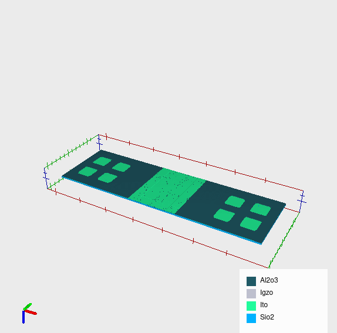
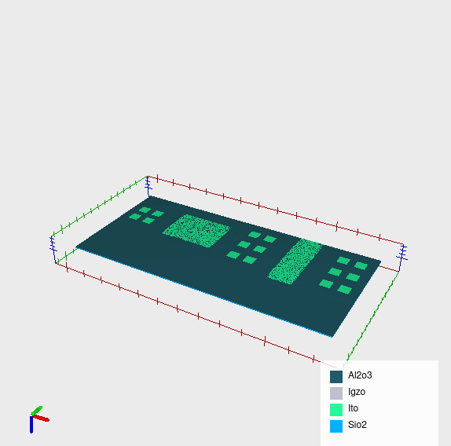
기준 소자 구조
전기 해석에 사용한 기준 구조는 W 15 um / L 10 um의 Top-gate IGZO TFT입니다. 실제 공정 설계값(SiO2 0.5 um · IGZO 30 nm · S/D ITO 40 nm · Al2O3 60 nm · Gate ITO 40 nm, Via 5 x 5 um)을 그대로 반영했고, 두께 차이가 커서 그림에서는 z축을 40배 확대해 표시했습니다.
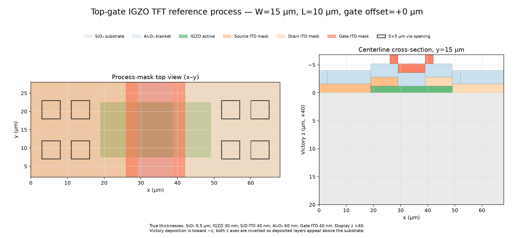
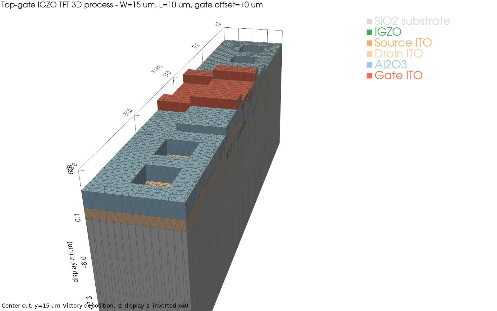
채널 폭 / 길이 변화에 따른 특성
채널 폭 W는 15, 20, 25 um (L = 10 um 고정), 채널 길이 L은 5, 10, 20 um (W = 15 um, 접촉 길이 10 um 고정)로 나누어 해석했습니다.
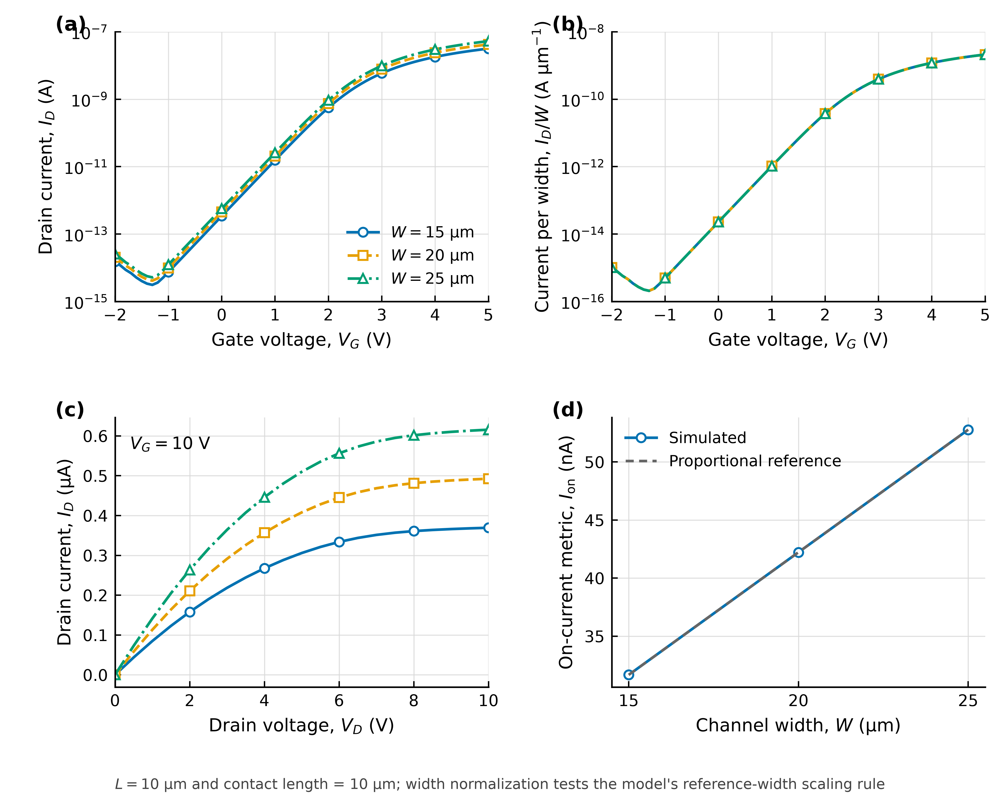
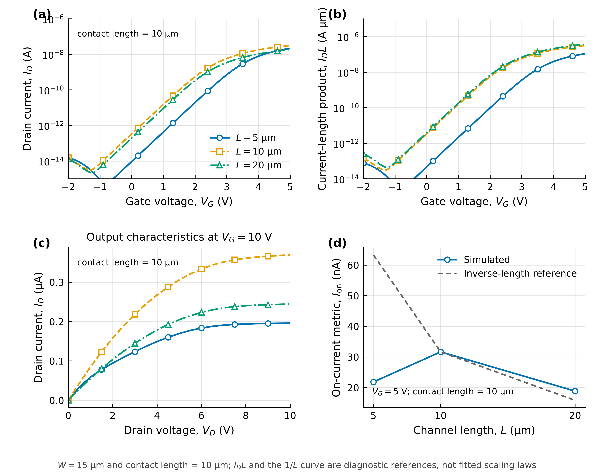
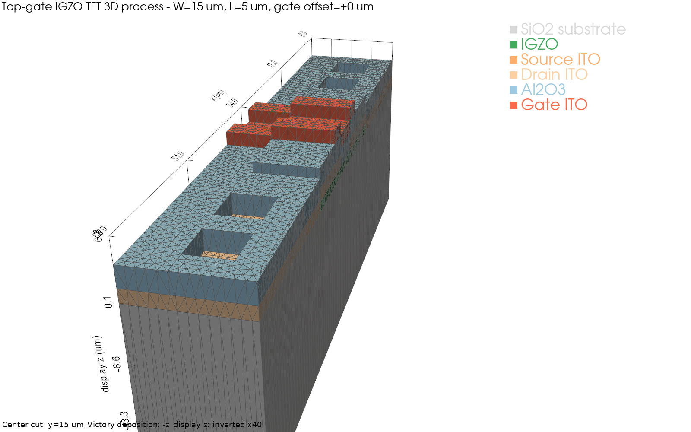
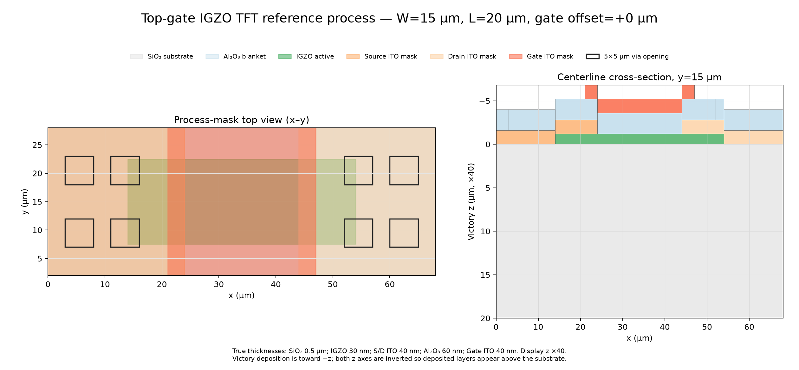
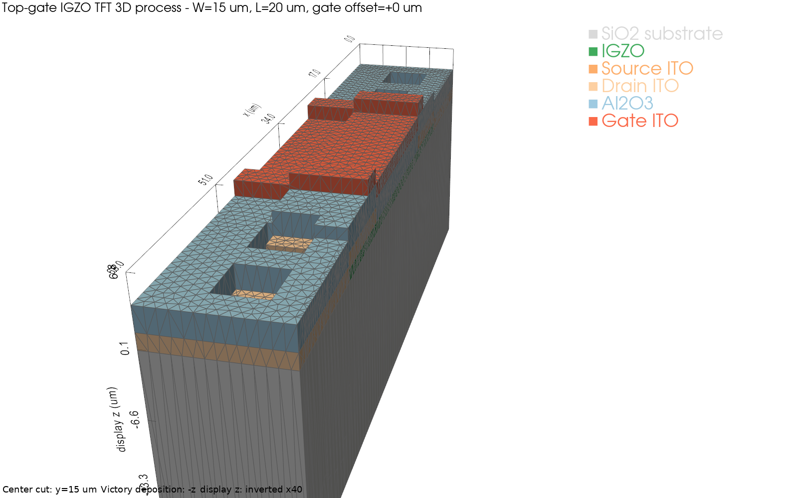
두 구조 모두 접촉 길이는 10 um로 같습니다. 채널만 짧아지므로 L = 5 um에서는 전체 저항 중 접촉·직렬 저항이 차지하는 비중이 커집니다.
| Split | W (μm) | L (μm) | Contact (μm) | VTH (V) | Ion (nA) | Ion/W (nA μm−1) | IonL (nA μm) | gm,max (nS) | Ron (MΩ) | ID at 10/10 V (nA) |
|---|---|---|---|---|---|---|---|---|---|---|
| Width | 15 | 10 | 10.0 | 2.705 | 31.667 | 2.111 | — | 13.831 | 12.181 | 369.344 |
| Width | 20 | 10 | 10.0 | 2.705 | 42.222 | 2.111 | — | 18.441 | 9.136 | 492.458 |
| Width | 25 | 10 | 10.0 | 2.705 | 52.778 | 2.111 | — | 23.052 | 7.309 | 615.573 |
| Length | 15 | 5 | 10.0 | — | 21.843 | — | 109.215 | — | — | 196.084 |
| Length | 15 | 10 | 10.0 | — | 31.667 | — | 316.668 | — | — | 369.344 |
| Length | 15 | 20 | 10.0 | — | 18.857 | — | 377.144 | — | — | 244.493 |
Width 분할은 L = 10 μm, Length 분할은 W = 15 μm 및 contact = 10 μm입니다. —는 원본 요약에 없는 값이며 추정값이 아닙니다. 폭이 15 → 25 μm로 커지면 Ion은 31.7 → 52.8 nA로 늘고 Ron은 12.2 → 7.3 MΩ로 줄지만, VTH는 2.705 V로 변하지 않습니다.
Beta 비율에 따른 Inverter 특성
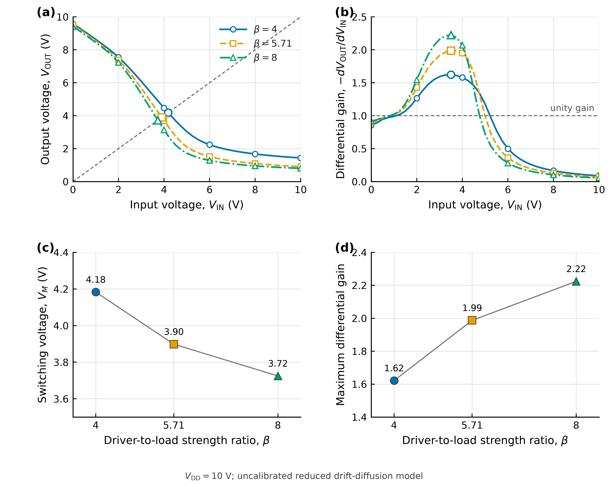
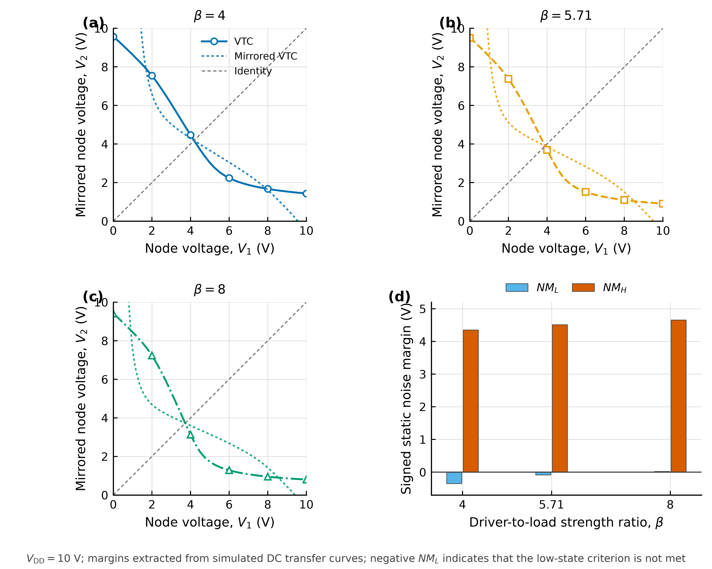
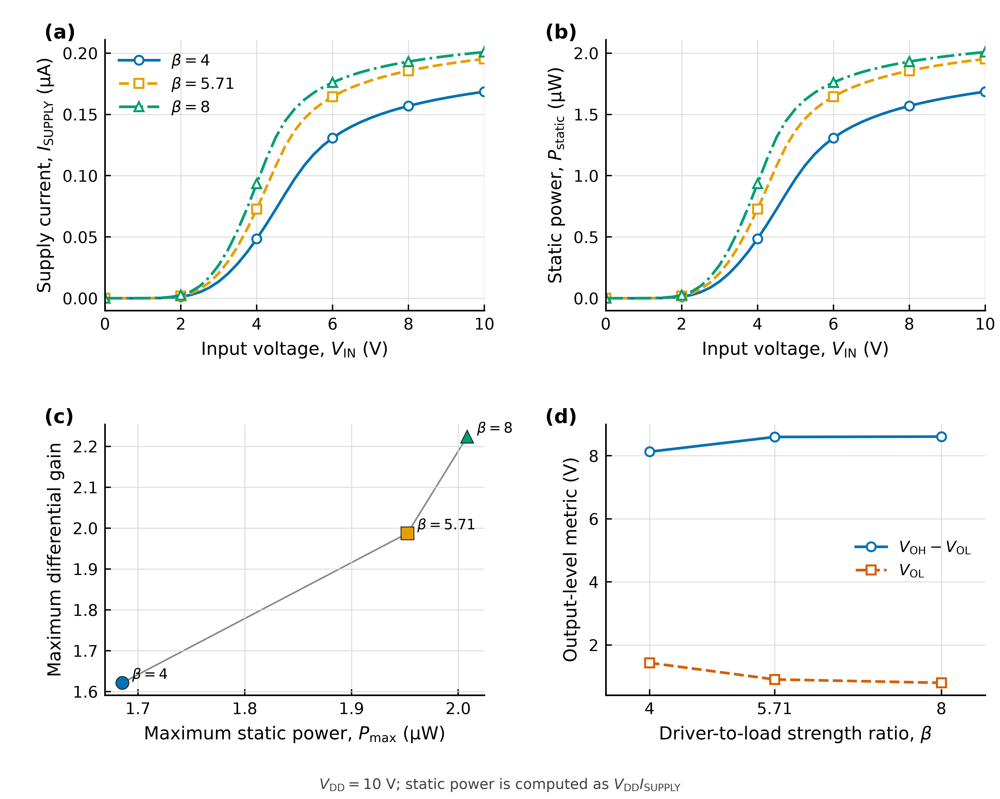
Load를 W15/L20으로 고정하고 Driver를 바꿔 beta = 4 (15/5), 5.71 (30/7), 8 (30/5)의 다이오드 부하 인버터를 VDD = 10 V에서 해석했습니다.
| β | Driver W/L | Load W/L | VM (V) | Max. gain (V/V) | VOH (V) | VOL (V) | NML (V) | NMH (V) | Max. static power (μW) |
|---|---|---|---|---|---|---|---|---|---|
| 4.00 | 15/5 | 15/20 | 4.183 | 1.622 | 9.564 | 1.436 | −0.351 | 4.351 | 1.685 |
| 5.71 | 30/7 | 15/20 | 3.898 | 1.987 | 9.506 | 0.909 | −0.086 | 4.512 | 1.952 |
| 8.00 | 30/5 | 15/20 | 3.725 | 2.224 | 9.410 | 0.802 | +0.024 | 4.654 | 2.008 |
Driver와 Load의 W/L 단위는 μm/μm이며 NML은 부호를 유지했습니다. 값은 보정하지 않은 축약 모델의 출력이고 VDD = 10 V입니다.
게이트 오정렬이 미치는 영향
W 15 um / L 10 um TFT의 게이트를 −5, −3, 0, +3, +5 um 이동시키며 같은 조건으로 해석했습니다. 부호는 방향 정보를 유지한 값이고, 정규화는 정렬된 0 um 결과를 기준으로 합니다.
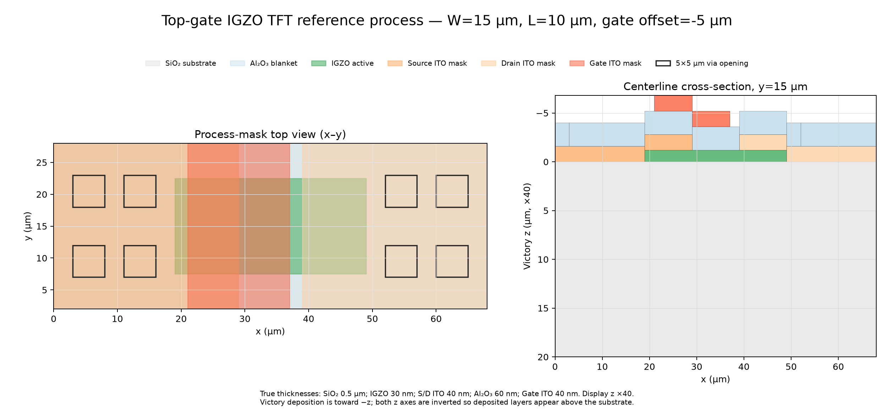
−5 um (Source 쪽) 원본
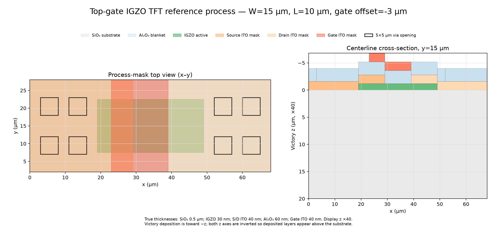
−3 um 원본
0 um (기준) 원본
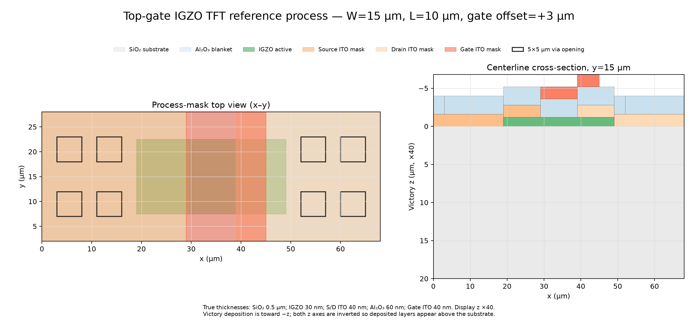
+3 um 원본
+5 um (Drain 쪽) 원본
Fig. 24. 게이트 오정렬 5수준의 해석용 마스크 평면도 (W 15 um / L 10 um 기준). 빨간색 Gate ITO가 채널 중앙에서 Source/Drain 방향으로 이동하며, 이동량이 3 um를 넘어가면 게이트가 채널 한쪽 끝을 벗어나 offset 영역이 생깁니다.
Gate offset −5 um (Source 쪽)
Gate offset −3 um
Gate offset 0 um (기준)
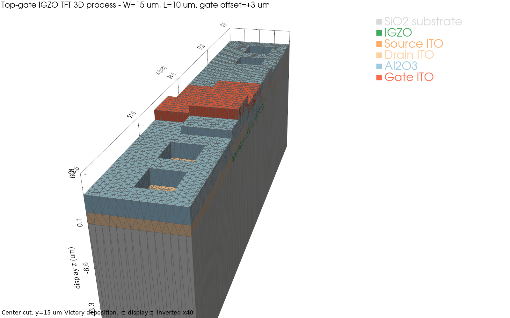
Gate offset +3 um
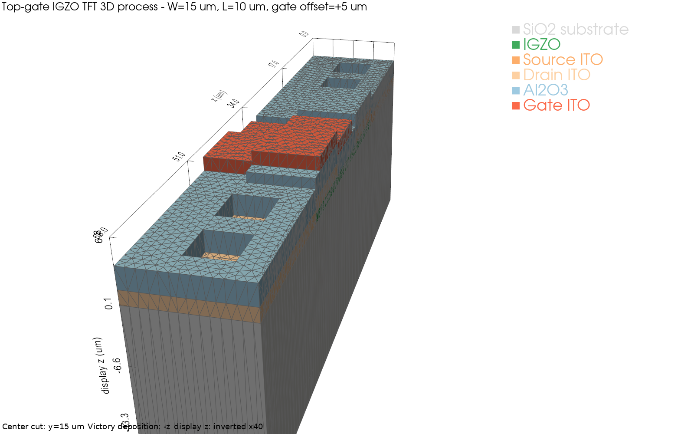
Gate offset +5 um (Drain 쪽)
Fig. 25. 게이트 오정렬 5수준의 3차원 해석 구조.
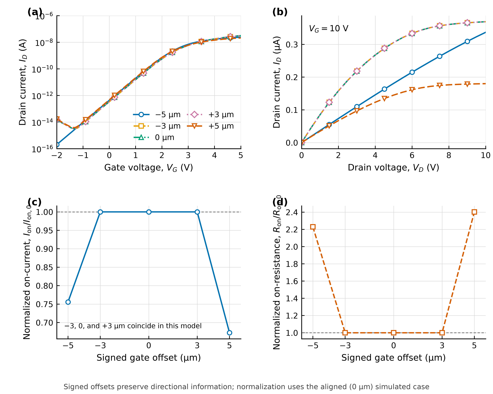
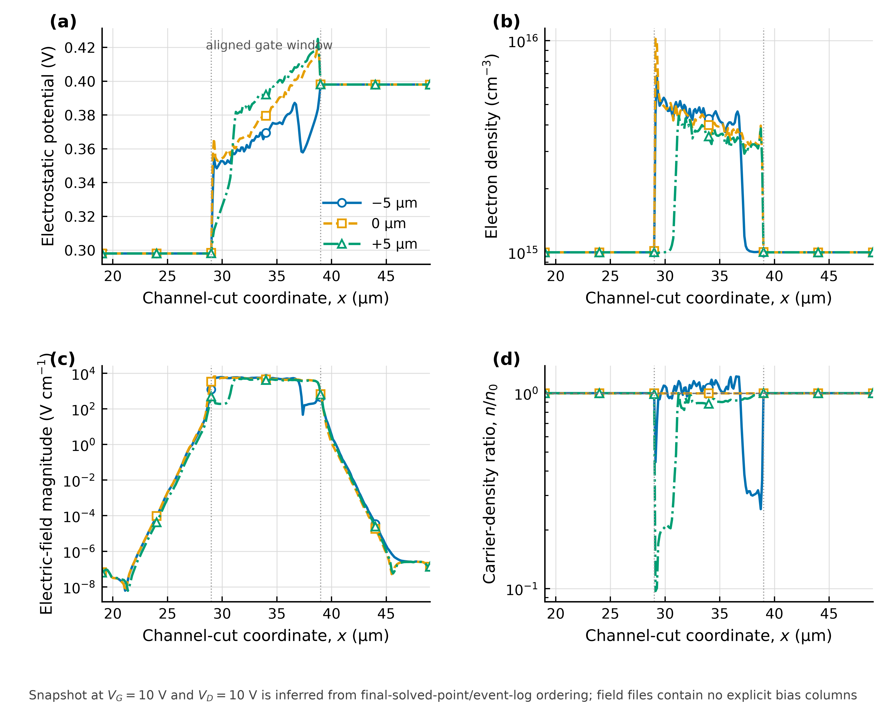
| Gate offset (μm) | VTH (V) | Ion (nA) | Ion/Ion,0 | gm,max (nS) | Ron (MΩ) | VDSAT (V) | Early voltage (V) |
|---|---|---|---|---|---|---|---|
| −5 | 2.344 | 23.929 | 0.756 | 10.612 | 27.162 | 8.800 | 9.125 |
| −3 | 2.705 | 31.667 | 1.000 | 13.831 | 12.181 | 5.946 | 38.880 |
| 0 | 2.705 | 31.667 | 1.000 | 13.831 | 12.181 | 5.946 | 38.880 |
| +3 | 2.705 | 31.667 | 1.000 | 13.831 | 12.181 | 5.946 | 38.880 |
| +5 | 2.321 | 21.289 | 0.672 | 8.734 | 29.279 | 6.045 | 36.037 |
Ion은 VG = 5 V, VD = 1 V에서 평가하고 정렬된 경우로 정규화했으며, 오프셋의 부호를 유지했습니다. ±5 μm에서 VTH가 약 2.71 → 2.32~2.34 V로 이동하고 gm,max는 13.8 → 8.7~10.6 nS로 감소합니다.
실측에서 확인할 항목
- 폭 방향은 선형, 길이 방향은 접촉 저항 때문에 1/L에서 벗어나는지 — 짧은 채널의 On-current 손실 확인
- beta = 4, 5.71 인버터의 낮은 출력 레벨(VOL)이 실제로도 low 조건을 만족하지 못하는지
- 게이트 오정렬 허용 범위가 실제로도 ±3 um 부근에서 꺾이는지 — 1 um급 소자의 공정 성공률과 직결
- 보정하지 않은 모델이므로 VTH와 전류 절대값은 실측과 다를 수 있음. 추세 비교에만 사용
참고 문헌
- 김준우, 이광준, 정재욱, 김성진, 최병대 (2012). “투명산화물반도체 a-IGZO 박막트랜지스터의 제작과 채널두께에 따른 전기적특성분석,” 『한국진공학회 제42회 동계정기학술대회 프로그램집』, 394-395.
- Kaizhen Han, Subhranu Samanta, Chen Sun, Xiao Gong (2021). “Top-Gate Short Channel Amorphous Indium-Gallium-Zinc-Oxide Thin Film Transistors With Sub-1.2 nm Equivalent Oxide Thickness,” IEEE Journal of the Electron Devices Society, 9, 1125-1130.
- Woo-Seok Cheong et al. (2009). “Effects of Interfacial Dielectric Layers on the Electrical Performance of Top-Gate In-Ga-Zn-Oxide Thin-Film Transistors,” ETRI Journal, 31(6), 660-666.
- Dapeng Wang, Wenjing Zhao, Hua Li, Mamoru Furuta (2018). “Drain Current Stress-Induced Instability in Amorphous InGaZnO Thin-Film Transistors with Different Active Layer Thicknesses,” Materials, 11(4), 559.
- 성효성, 김우성, 김홍승, 윤영, 장낙원 (2010). “게이트 절연체의 두께에 대한 IGZO TFT의 전기적 특성,” 『한국마린엔지니어링학회 2010년도 후기학술대회 논문집』, 413-414.
- Shiben Hu et al. (2018). “Effect of ITO Serving as a Barrier Layer for Cu Electrodes on Performance of a-IGZO TFT,” IEEE Electron Device Letters, 39(4), 504-507.
- Aliyu Kabiru Isiyaku, Ahmad Hadi Ali, Nafarizal Nayan (2020). “Structural Optical and Electrical Properties of a Transparent Conductive ITO/Al-Ag/ITO Multilayer Contact,” Beilstein Journal of Nanotechnology, 11, 695-702.
- Wei Deng, Xin He, Xiang Xiao, Shengdong Zhang (2012). “Comparative Study of a-IGZO TFTs Deposited by RF and DC Sputtering,” 2012 IEEE International Conference on Electron Devices and Solid-State Circuits (EDSSC).
- 이호년, 김형중 (2010). “IGZO 박막트랜지스터의 동작특성,” 『한국산학기술학회논문지』, 11(5), 1592-1596.
- 노영수 (2025). 『Ag nanowire lift off 방식 Etchless Recess 나노스케일 IGZO TFT 공정 개발』, 학위논문, 한양대학교 대학원.
- 최영곤 (2022). 『리프트 오프 공정을 이용한 단채널 비정질 인듐-갈륨-산화아연 박막 트랜지스터의 나노초 레이저 어닐링에 관한 연구』, 학위논문, 가천대학교 일반대학원.
인용
@misc{KyonggiEoN2026,
title={IGZO TFT 설계 및 시뮬레이션, 그리고 공정과 측정},
author={경기대학교 EoN 22기},
year={2026},
note={1 um급 IGZO TFT의 W/L 및 Gate Misalignment 변화에 따른 공정 허용오차와 전기적 특성 분석},
url={https://kyonggi-eon.github.io/hw_2026/}
}